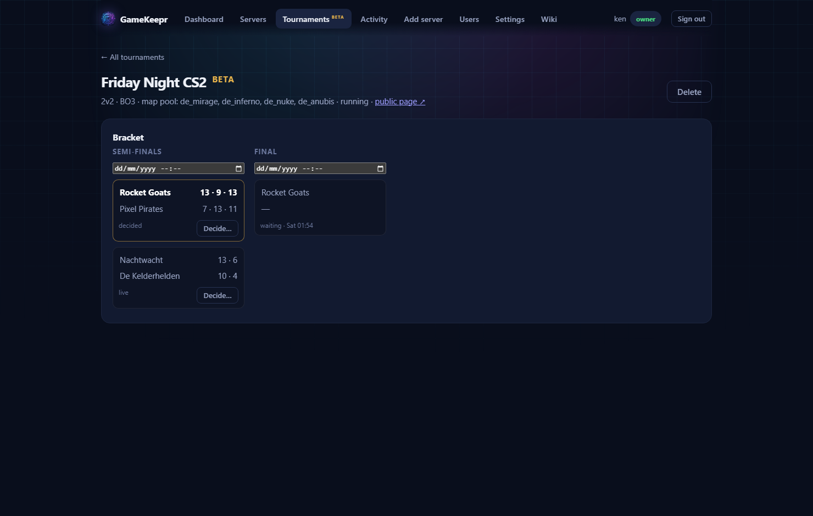
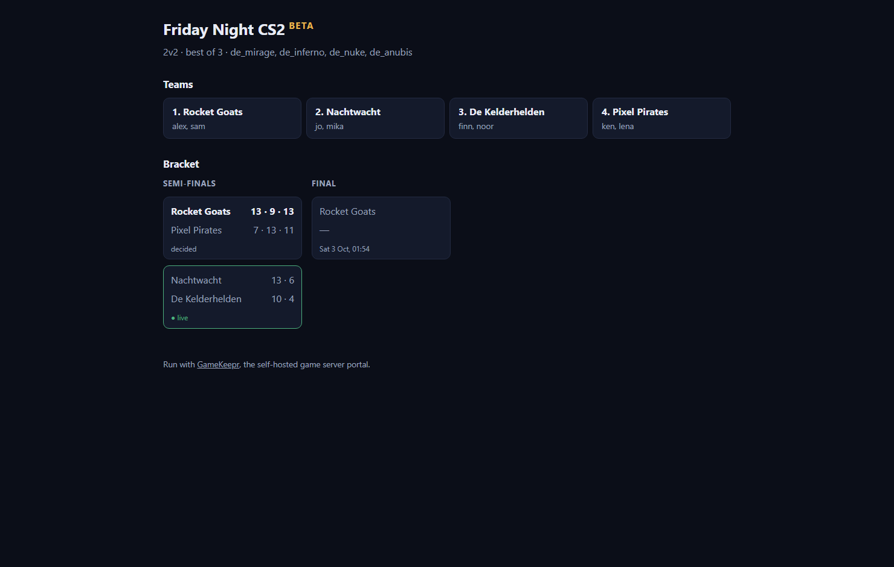

Tournaments (beta)

Brackets played on servers this portal builds per match and retires after. The feature wears a beta label until it has been tested and validated end to end — expect rough edges, and say what you hit.
Teams first
Everyone can create a team on the Tournaments page; whoever creates it is its captain and manages the roster. One thing matters more than it looks: Steam64 IDs. The match server reserves player slots by Steam ID, so a member without one cannot claim their seat. Fill them in on the team card — each member can set their own, the captain can fix anyone's. (Find yours on your Steam profile URL, or via steamid.io — it is the 17-digit number.)
The tournament's life
- Draft — an operator or the owner creates it: players per team, best of 1/3/5, the map pool, a team limit. A pool larger than the series length means the teams veto in-game, exactly as they know it from FACEIT; a pool of the same size plays in order.
- Registration — captains enter their teams. The organizer can nudge the seeding (the arrows next to each entry); random is fair, but two top teams meeting in round one is worth preventing.
- Running — starting builds the bracket. Uneven fields get byes: the top seeds skip round one, visibly. The organizer schedules each round; fifteen minutes before a match's time the portal builds its server — fresh password, its own port, its own Steam token — and pings Discord when it is ready. Players hit How to join on their match for the console connect line. MatchZy runs the competitive flow in-game (ready-up, knife round, veto) and reports every score back; the bracket moves the moment a series ends, and the server is retired along with its token.
- Finished — a decided final crowns the champion and closes the tournament. The page stays, as the archive.
The public page

Every tournament past its draft has a shareable, read-only page at /t/<its-name> — the public page link on the tournament. Live bracket, scores as they happen, the champion afterwards. Team names always, player names only when the organizer flips the per-tournament switch — and never passwords, connect info or anything else that belongs inside.
Publishing through Cloudflare Access? Access guards /t/... too. To make the public pages genuinely public, add an Access application for the path your-portal/t/* with a Bypass policy; everything else stays behind the door.
When reality disagrees
The organizer's word outranks the game. The Decide… button on any match names a winner — with a mandatory reason that lands in the activity log — and is also how a no-show becomes a forfeit. A result can be corrected until the next round's match starts; after that, correct that match instead.
What it costs the machine
A CS2 server wants ~2 GB RAM and a core or two; the shared installation is ~35 GB on disk, downloaded once on the first match ever (expect that first provision to take a long while — do it before tournament night, not during). Two matches run at once by default; the game ports (27051-27058) follow the same forwarding story as every other server — see Networking and ports.